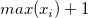
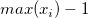

Legt den Eingabedatensatz fest.
| Zustandswert |
Legt fest, welche Zustände positiv sein sollen. |
| Schwellenwert-Methode |
Diese Option legt fest, welche Grenzwerte in der ROC-Kurve verwendet werden sollen.
-
Interpolation der Datenpunkte
- Diese Methode definiert die Grenzwerte als die Werten, die genau in der Mitte zwischen zwei aufeinanderfolgenden Datenpaaren der Testwerte liegen, plus  und 
-
Entwurfsmodus
- Grenzwerte sind die Begrenzungen für 100 äquidistante Intervalle, wenn der Entwurfmodus verwendet wird.
|
| Testrichtung |
Wählen Sie eine Testrichtung.
-
Positiv vs. Hoch
- Größere Testmesswerte weisen auf einen positiveren Test hin.
-
Positiv vs. Niedrig
- Kleinere Testmesswerte weisen auf einen positiveren Test hin.
|
| ROC-Kurve |
Durch Aktivieren dieses Kontrollkästchens wird die ROC-Kurve ausgegeben.
-
Optimaler Grenzpunkt
- Wählen Sie diese Option, um den optimalen Entscheidungsschwellenwert auf der ROC-Kurve zu markieren.
-
Mit diagonaler Referenzlinie
- Durch Aktivieren dieses Kontrollkästchens wird eine diagonale Referenzlinie in die ROC-Kurve eingefügt.
|
| Standardfehler und Konfidenzintervall |
Durch Aktivieren dieses Kontrollkästchens werden Standardabweichung und Konfidenzintervall ausgegeben. Intervallbereich unter der Kurve
-
Konfidenzniveaus in %
- Legt das Konfidenzniveau der Konfidenzintervalls fest.
|
| Datensatzidentifizierer |
Der Identifizierer für die Quelldatensätze wird festgelegt.
-
Identifizierer
-
Es kann ein Typ für die Informationen der Quelldatensätze ausgewählt werden.
-
- Die Bereichssyntax wird verwendet.
- Der Langname der Arbeitsmappe wird verwendet.
- Der Arbeitsblattname wird verwendet.
- Verwenden Sie den Langnamen der entsprechenden Spalte, wenn es einen Langnamen gibt. Ansonsten verwenden Sie den Kurznamen der Spalte.
- Verwenden Sie den Kurznamen der entsprechenden Spalte.
- Verwenden Sie den Langnamen der entsprechenden Spalte.
- Verwenden Sie die Einheit der entsprechenden Spalte.
- Verwenden Sie den Kommentar der entsprechenden Spalte.
- Verwenden Sie benutzerdefinierte Formate, um einen Datenidentifizierer zu definieren. Einzelheiten zu seiner Anwendung finden Sie unter Erweiterte Anpassungen des Legendentexts.
-
Identifizierer im Ergebnisblatt
- Legen Sie fest, ob der Datensatzidentifizierer im Ergebnisblatt verwendet wird.
|
| Berichtstabellen |
Legen Sie das Ziel für die Berichtstabellen fest.
-
Mappe
- Legen Sie die Zielarbeitsmappe fest.
-
-
- <Keine>: Berichtsblatttabellen nicht ausgeben
-
-
- <Quelle>: Die Quelldatenarbeitsmappe
-
-
- <neu>: Eine neue Arbeitsmappe
-
-
- <existiert>: Eine festgelegte existierende Arbeitsmappe
-
Blatt
- Das Zielarbeitsblatt, immer <neu>
-
Ergebnisfenster
- Verwenden Sie dieses Kontrollkästchen, um festzulegen, ob der Bericht im Ergebnisfenster ausgegeben werden soll oder nicht.
-
Skriptfenster
- Verwenden Sie dieses Kontrollkästchen, um festzulegen, ob der Bericht im Skriptfenster ausgegeben werden soll oder nicht.
-
Notizfenster
- Verwenden Sie diese Auswahlliste, um das Ziel des Notizfensters festzulegen:
-
-
- <Keine>: Nicht in Notizfenstern ausgeben
-
-
- <neu>: In ein neues Notizfenster ausgeben Sie können den gewünschten Namen des Notizfensters hier eingeben.
|
| Daten zeichnen |
Legt das Ziel der Werte der ROC-Kurve fest.
-
Mappe
- Legen Sie die Zielarbeitsmappe fest.
-
-
- <Keine>: Berichtsblatttabellen nicht ausgeben
-
-
- <Quelle>: Die Quelldatenarbeitsmappe
-
-
- <neu>: Eine neue Arbeitsmappe
-
-
- <existiert>: Eine festgelegte existierende Arbeitsmappe
-
Blatt
- Das Zielarbeitsblatt, immer <neu>
|
| Optionale Berichtstabellen |
Legt fest, was in das Berichtsblatt ausgegeben wird.
-
Hinweise
- Tabelle für Notizen
-
Eingabedaten
- Tabelle für Eingabedaten
-
Maskierte Daten
- Tabelle für maskierte Daten
-
Fehlende Daten
- Tabelle für fehlende Daten
|